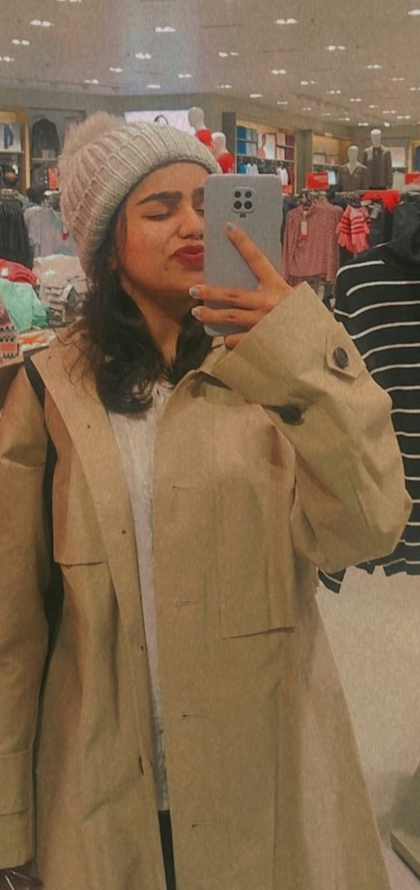

Hello, Online Readers! Welcome to the journey of discovering more about me. I'm Tia Tiwari, a passionate second-year college student, currently immersed in the captivating world of Computer Science Engineering as I pursue my Bachelor's Degree. Engineering wasn't initially on my radar, as I found myself drawn to the artistic side of life rather than delving into the complexities of Math and Physics during my school days. However, my college experience has been nothing short of a delightful surprise. Being in this field feels like solving puzzles every day, each challenge contributing to my growth, making me smarter. As I navigate through the intricacies of computer science, I find myself continually evolving and embracing opportunities to learn. I'm excited to share more,but for now, I invite you to explore more!
